|
Presentación pública de A.R.D.E. Octubre, 2005 |
|
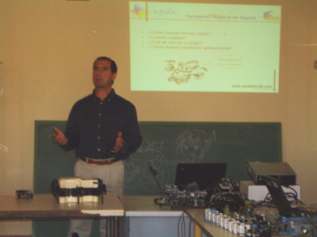 |
Evento: Presentación pública de A.R.D.E: Agrupación Robótica De España
Fecha: 2 de Octubre de 2005
Lugar: Centro Joven de Alcorcón, Madrid.
Organizan:Alejandro Alonso Puig. (Quark Robotics) y otros miembros de A.R.D.E.
Actividades: Charla de presentación y demostraciones de robots en vivo.
Más información: en esta página, de la web de A.R.D.E
A raíz la CamputBot 2005, muchos de los asistentes se conocieron y a través de la lista de CampusBot decidieron agruparse y formar la Agrupación Robótica De España: A.R.D.E. El día 2 de Octubre de 2005 fue la presentación pública y oficial, llevada a cabo por Alejandro Alonso Puig
La presentación era el día 2 de Octubre (Domingo) a las 12h de la mañana. Tal vez un poco pronto para ser domingo, y más teniendo en cuenta que la noche anterior muchos de los miembros habían estado de “tapitas” por Madrid hasta altas horas ;-) A mi me gusta mucho estar en esos “saraos” pero esta vez no pudo ser.
Había quedado con Alejandro, Ricardo Gómez e Isidro Ruiz en la puerta de Ifara. Desde allí nos fuimos a la zona centro a recoger a algunos de los miembros que habían venido desde fuera de Madrid, como Vicente Torres y Francisco Balbuena. Desde allí nos fuimos hasta el Centro Joven de Alcorcón donde sería la presentación.
Cuando llegamos nos juntamos con Jorge Montero, Agustín Perís y Jesús Leganés (Piranna). Antes de empezar teníamos que tomar un cafetito (foto de la izquierda). Antes de entrar al centro, Vicente no pudo aguantar la tentación de ver a Melanie III. En la foto de la derecha, Ricardo y Vicente están mirando con atención el hexápodo, todavía dentro de su espectacular maletín a medida.
|
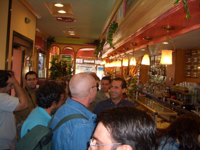 |
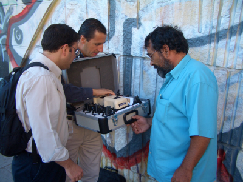 |
En la foto de la izquierda están, de izquierda a derecha: Agustín Perís, Isidro Ruiz, Jorge Montero, Alejandro Alonso y Ricardo Gómez.
Antes de comenzar la presentación, hubo una demostración de robots. Comenzó Ricardo Gómez enseñándonos el Skybot y el robot Clónico.
|
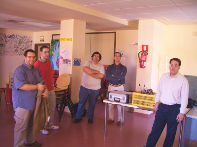 |
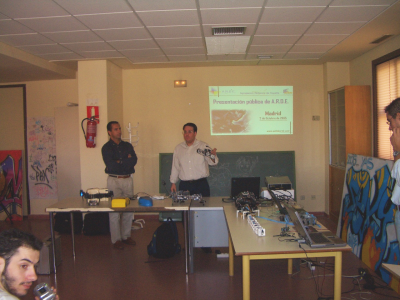 |
Andrés Prieto-Moreno, el creador de PuchoBot y la hormiga benita entre otros muchos robots, no pudo asistir, pero Ricardo Gómez hizo las demostraciones (foto de la izquierda). A continuación, mostré el funcionamiento de Cube Revolutions: las diferentes formas que puede adoptar, como en la foto de la derecha, que tiene la forma de una “cobra”, y pruebas de locomoción en línea recta utilizando diferentes tipos de ondas. Después hice unas demos de las diferentes configuraciones de Multicube.
|
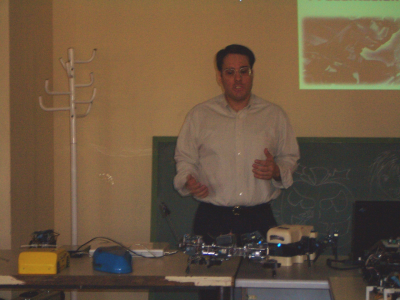 |
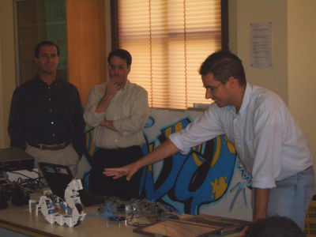 |
Pedro Yagüe nos mostró los robots rastreadores que había diseñado para participar en concursos (foto de la izquierda). Estaba excelentemente acabados, yo nunca había visto unos rastreadores tan bonitos. Una vez acabadas las demos, Alejandro hizo la presentación de la asociación (foto de la derecha).
|
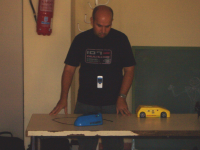 |
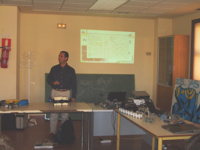 |
Uno de los asistentes fue Víctor Apéstigue. Aprovechamos para sacarnos una foto (izquierda), que no teníamos casi ninguna ;-) A la salida, estuve conversando con Pedro Yague y con Francisco Martín Rico, profesor Ayudante en la Universidad Rey Juan Carlos. En la foto de la derecha, estamos, de izquierda a derecha: Ricardo Gómez, Francisco Martín, Pedro Yagüe y yo.
|
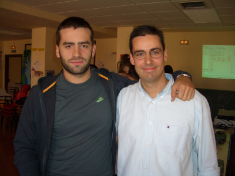 |
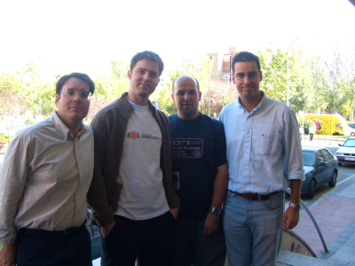 |
A Alejandro Alonso, una vez más, por invitarme a la presentación a mostrar mis robots. ¡Muchas Gracias!
A Ricardo Gómez, por su ayuda con la presentación de los robots de Andrés. ¡Muchas Gracias!
A Jesús Leganés (Piranna) por conseguir el local donde hacer la presentación. ¡Muchas Gracias!
Al resto de socios de A.R.D.E que participaron en la organización. ¡Muchas Gracias!